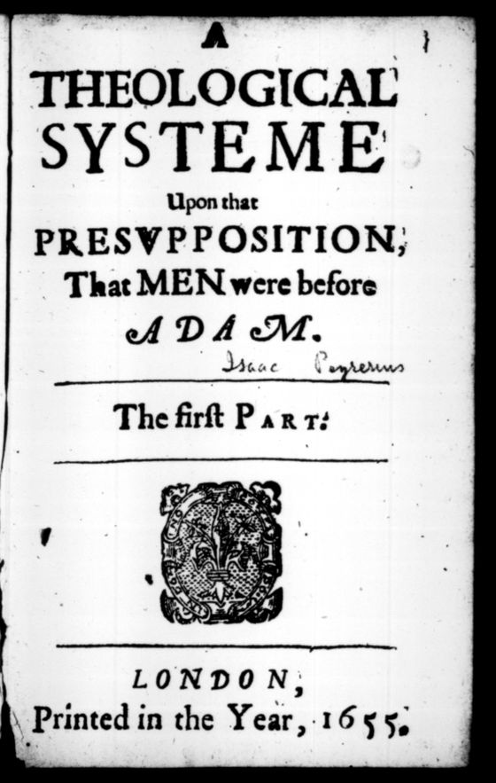
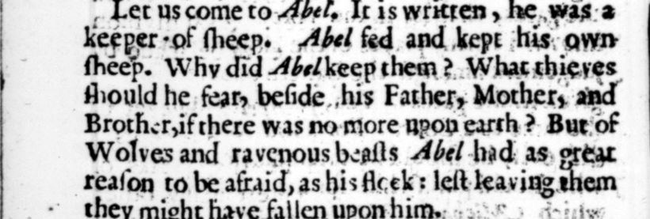
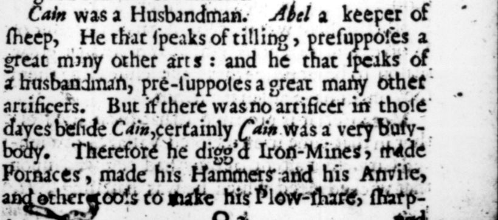

“What thieves should he fear?” Abel’s sheep (p. 148)

English: A Theological Systeme, book III, p. 148, scan. Highlighted: the argument Lecky reports.

Let us come to Abel. It is written, he was a keeper of sheep. Abel fed and kept his own sheep. Why did Abel keep them? What thieves should he fear, beside his Father, Mother, and Brother, if there was no more upon earth? But of Wolves and ravenous beasts Abel had as great reason to be afraid, as his flock: lest leaving them they might have fallen upon him.
Moreover, it is probable that Adam liv’d either in that time in an inclosed Village, or a fenced City. For after that Cain had resolved upon that wicked deed which he was hatching, He said …
The argument then turns to Cain’s “Let us go forth” (Genesis 4:8): if the brothers had to go out into the field, they lived inside some enclosure, “a Hamlet” or “the walls of some town”, and Cain killed Abel “when they were alone without witnesses: which Robbers and wicked men, who do ill deeds and commit Murther, use to do” (pp. 148–149, from the OCR only).
“Certainly Cain was a very busy-body”: the lone farmer’s tools (p. 147)
English: A Theological Systeme, book III, pp. 147–148, scan.

Adam knew his wife Eve, and she conceived and bare Cain her first-born, then Abel her younger son. And Adam divided his substance among his children, being men of age … He gave his lands to till to Cain, and his sheep to keep to Abel. Therefore there was at that time a Meum and Tuum, as there is, and has been alwayes in all societies well ordered. …
Cain was a Husbandman. Abel a keeper of sheep. He that speaks of tilling, presupposes a great many other arts: and he that speaks of a husbandman, pre-supposes a great many other artificers. But if there was no artificer in those dayes beside Cain, certainly Cain was a very busy-body. Therefore he digg’d Iron-Mines, made Fornaces, made his Hammers and his Anvile, and other tools to make his Plow-share, sharpned his hatchets, with which he was to cut down timber to make his Ploughs, his Harrows, his Carts, and the like. Then, if of that Corn which he reap’d, he made bread, then Cain too digg’d the quarry to make his Mill to grind … Therefore Cain was a tiller, a harvest-man, and a baker: And Cain had all these arts alone, for the exercising of which so many artificers are required; which could not be found out but by long study and long experience. All these things are nothing. The noblest of all men, who had God for his Grand-father, and the Earth his Grandmother, was turned into the Iron Mines, and quarry-pits, or into the pounding Mill to break Corn, whither those were carried who were condemned to digging of Metals, or servants, who were to be punished.
This is the nearest thing on these pages to Lecky’s “where Cain got the weapon with which he killed his brother”. The Bible does not say how Cain killed Abel; La Peyrère’s point here is about the iron for a farmer’s tools.
The Irish sequel: “Millennium Dobbs”
In the same note Lecky mentions “an eccentric member of the Irish Parliament named Dobbs”, who in “a very strange book called A Short View of Prophecy” held that there was a race born of an intrigue of Eve with the Devil. This is presumably Francis Dobbs (1750–1811), known as “Millennium Dobbs”, who told the Irish House of Commons in 1800 that the Union with Britain was forbidden by scripture and published in the same year a Concise View of the Great Predictions in the Sacred Writings; Lecky’s title is probably a misremembering of that one. (He was a nephew of Arthur Dobbs, governor of North Carolina.) According to the Wikipedia article, the historian Richard Popkin rejected the reading of Dobbs’s Genesis as pre-Adamite or as the “serpent seed” doctrine, which is just what Lecky ascribes to him. This edition has not found a scan of Dobbs’s book to settle it.
Further down the rabbit hole
Sources that Lecky cites in the notes next to the ones that cite this page.
- Laplace, Exposition du système du monde“Deux cent mille milliards à parier contre un”
- Durand, La vie et les sentimens de Lucilio VaniniWere the pagan oracles the Devil’s work? “If Father Baltus wants to believe in them, he is welcome”
- Agobard, Liber de imaginibusLecky’s five Agobard quotes checked against Baluze
- Aquinas, Summa theologiae, Supplement, q. 94Lecky’s quotation that is really a paraphrase
- Augustine, De Genesi contra ManichaeosGenesis as allegory: the six days as the ages of history and the stages of the soul
- Augustine, De TrinitateNobody knows what Christ looked like


Backlinks
Every place in Rationalism in Europe that links to this page (generated automatically when the site is built).